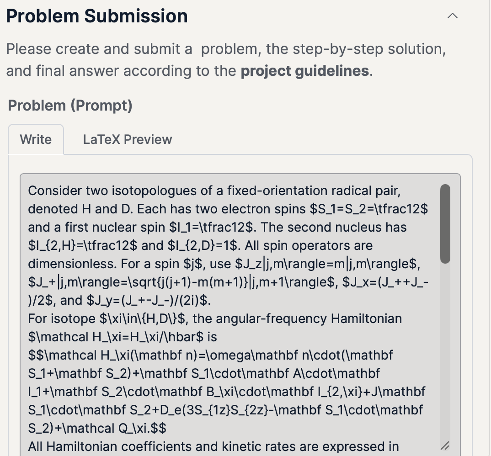
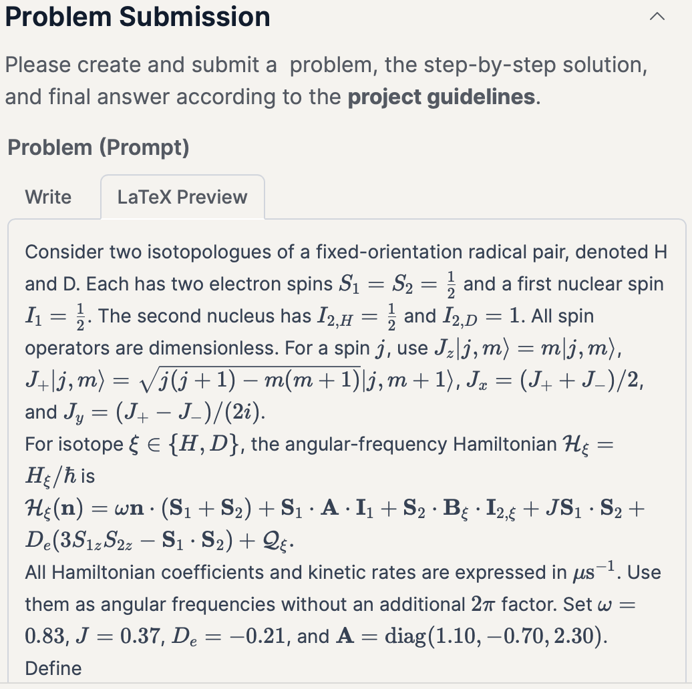
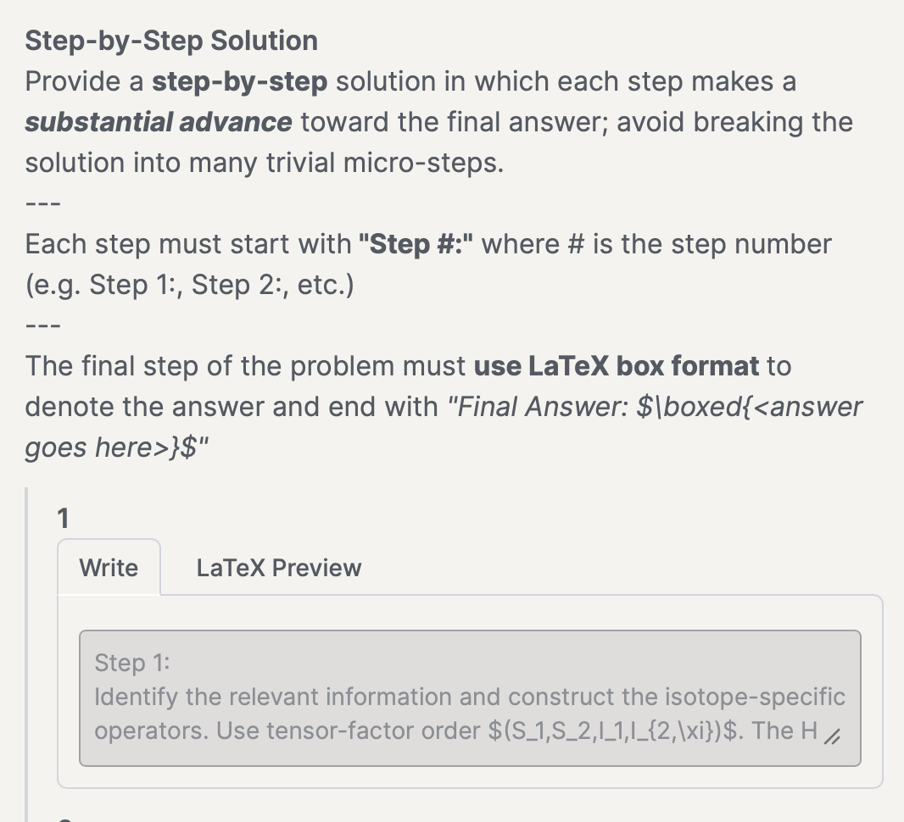
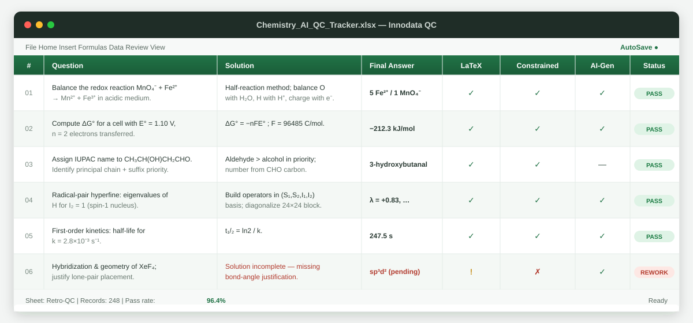
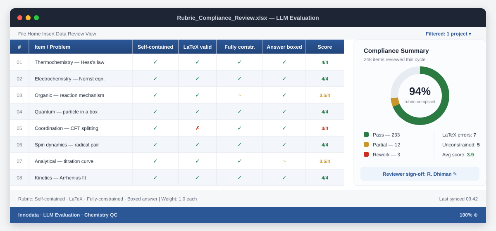

I evaluate AI-generated content, review LLM outputs, and validate scientific accuracy — checking LaTeX, reasoning quality, and instruction compliance, backed by subject-matter expertise in Chemistry.
Core focus areas
I'm an AI Operations & Quality Control professional with hands-on experience in LLM evaluation, AI model assessment, data quality, project quality management, and team coordination. Today I work on Chemistry-focused AI operations — making sure model outputs are accurate, well-structured, and submission-ready.
My Chemistry and teaching background lets me judge whether the science itself is correct, logically sound, and clearly presented — not just whether the formatting looks right. That combination of domain depth and QC discipline is what I bring to every project.
Six focused services across AI evaluation and scientific quality assurance.
Model response review, factual-accuracy checks, reliability assessment, and instruction-following evaluation.
Structured QA/QC reviews, error identification, project compliance checks, and final deliverable validation.
Technical review of chemistry questions, solutions, mechanisms, calculations, nomenclature, and explanations.
Scientific notation, equation formatting, syntax checks, structural consistency, and presentation review.
Data validation, content review, structured evaluation, rubric compliance, and quality reporting.
Actionable reviewer feedback, recurring-issue analysis, workflow improvement, and consistency monitoring.
Quality controller for Chemistry-focused AI projects. Review LLM outputs, validate accuracy and instruction adherence, check LaTeX and scientific formatting, give corrective feedback, and support process improvement.
Developed lesson plans, assessments, and instructional materials; ran performance reviews and designed corrective learning strategies.
Delivered Chemistry instruction, designed structured explanations, monitored performance, and gave targeted feedback.
Delivered online Chemistry instruction for IIT-JEE and NEET learners; supported digital assessment and performance evaluation.
A look at the kind of evaluation, authoring, and QC interfaces I work in day to day.
Authoring and quality-reviewing self-contained, fully-constrained scientific problems — complete with step-by-step solutions, boxed final answers, and strict LaTeX. Each submission is checked against a rubric before it enters the AI evaluation set.
\boxed{} final answers



⤢Structured QC review of AI outputs — accuracy, completeness, LaTeX/notation checks, formatting validation, and requirement adherence, logged per record.

⤢Per-item scoring against a rubric: self-contained, LaTeX valid, fully-constrained, and boxed answer — with pass / partial / rework roll-up and reviewer sign-off.
Review of equations and Chemistry content for notation, syntax, units, formatting consistency, and technical correctness before delivery.
Chemistry-focused quality review of AI deliverables for accuracy, consistency, completeness, instruction compliance, and submission readiness.
Planned QC and delivery support: structured review, accuracy checks, completeness verification, LaTeX validation, and instruction compliance.
Creating and reviewing self-contained Chemistry questions for evaluating AI reasoning — validated solutions, final answers, difficulty labels, consistent formatting.
Project names reflect my Innodata and Handshake AI experience. Descriptions and sample interfaces are illustrative and high-level — they do not disclose confidential client data, internal rubrics, datasets, or proprietary workflows.
I check accuracy, structure, notation, and compliance — not just surface formatting.
An M.Sc. background used to validate that the science is genuinely correct.
I review LLM outputs, identify failure modes, and give actionable feedback.
I'm available for freelance projects in LLM evaluation, scientific content review, Chemistry SME work, and quality control.